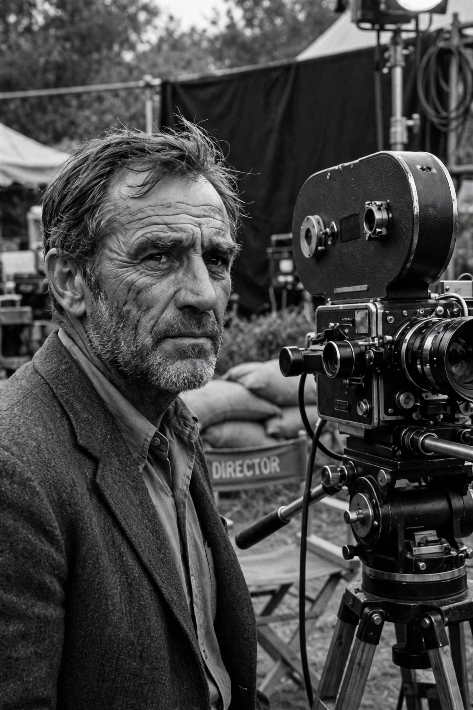

| Born | 5 August 1906, Nevada, Missouri, U.S. |
|---|---|
| Died | 28 August 1987 (aged 81), Middletown, Rhode Island, U.S. |
| Occupation | Film director, screenwriter, actor |
| Years active | 1930–1987 |
| Notable work | The Maltese Falcon; The Treasure of the Sierra Madre; The African Queen; Prizzi's Honor; The Dead |
| Children | Including Anjelica Huston and Danny Huston |
John Marcellus Huston (August 5, 1906 – August 28, 1987) was an American film director, screenwriter and actor. He wrote the screenplays for most of the 37 feature films he directed, many of which are today considered classics, including The Maltese Falcon (1941), The Treasure of the Sierra Madre (1948), The Asphalt Jungle (1950), The African Queen (1951), The Misfits (1961), Fat City (1972), The Man Who Would Be King (1975) and Prizzi's Honor (1985).

Huston directed 37 feature films across six decades.
The son of actor Walter Huston, John Huston began as a screenwriter at Warner Bros. His directorial debut, The Maltese Falcon (1941), starring Humphrey Bogart, defined film noir. He won Academy Awards for Best Director and Best Screenplay for The Treasure of the Sierra Madre, in which his father won Best Supporting Actor — the first father-son winner combination. The African Queen earned Bogart his only Oscar, for Best Actor.
Huston's films frequently explored adventure, obsession and failure, with heroes pursuing doomed quests. He was also a noted character actor, memorably playing Noah Cross in Chinatown (1974). A founding figure of the Directors Guild's defence of creative rights, he received the AFI Life Achievement Award in 1983. He directed his final film, The Dead (1987), from a wheelchair while using an oxygen supply. He died in 1987 and is buried at Hollywood Forever Cemetery.